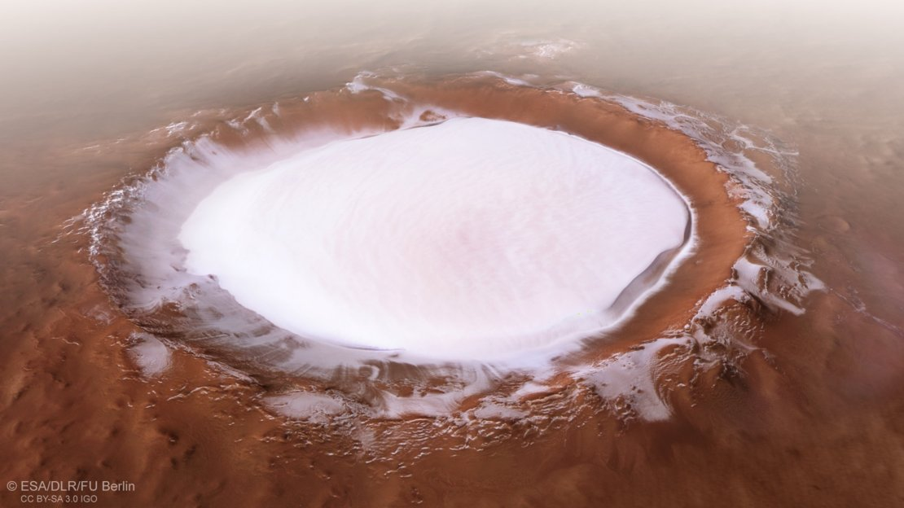

¿Que es Marte?
Marte es el cuarto planeta en orden de distancia al Sol y el segundo más pequeño del sistema solar, después de Mercurio. Recibió su nombre en homenaje al dios de la guerra de la mitología romana (Ares en la mitología griega), y también es conocido como «el planeta rojo» debido a la apariencia rojiza que le confiere el óxido de hierro predominante en su superficie.

Marte es el planeta interior más alejado del Sol. Es un planeta telúrico con una atmósfera delgada de dióxido de carbono, y posee dos satélites pequeños y de forma irregular, Fobos y Deimos (hijos del dios griego), que podrían ser asteroides capturados similares al asteroide troyano (5261) Eureka. Sus características superficiales recuerdan tanto a los cráteres de la Luna como a los valles, desiertos y casquetes polares de la Tierra.

Las investigaciones en curso evalúan su habitabilidad potencial en el pasado, así como la posibilidad de existencia actual de vida. Se planean futuras investigaciones astrobiológicas, entre ellas la Mars 2020 de la NASA y la ExoMars de la ESA.El agua en estado líquido no puede existir en la superficie de Marte debido a su baja presión atmosférica, que es unas 100 veces inferior a la de la Tierra, excepto en las zonas menos elevadas durante cortos periodos de tiempo.Los dos casquetes polares parecen estar formados en su mayor parte por agua.